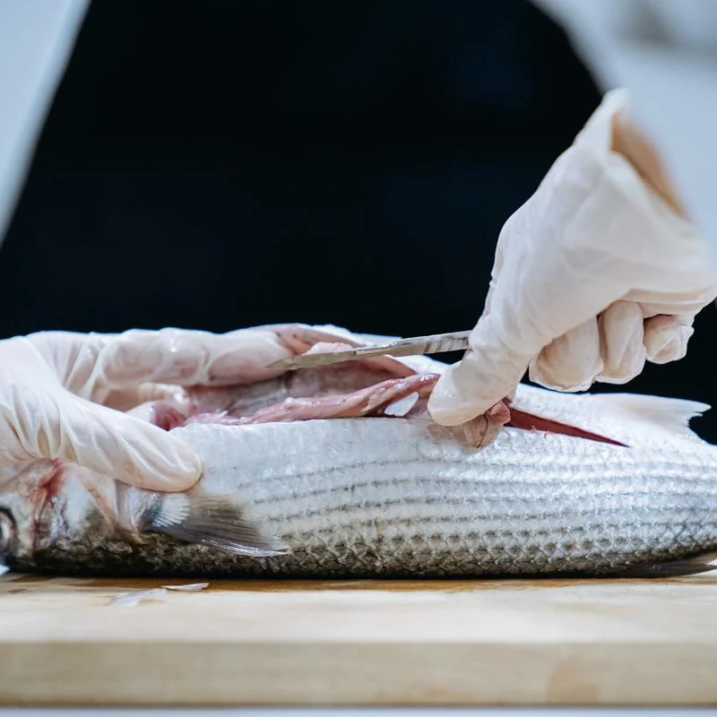

03Microplastics
How do plastic bags impact seabirds and marine mammals?
Microplastics are difficult to remove and filter. Additionally, microplastics have begun to affect human health.
Microplastics are plastic particles smaller than 5 millimeters. They originate from the breakdown of plastic products we use in our daily lives and enter the natural environment through waste disposal.
Microplastic Transmission Routes
Microplastics are mistaken for algae by small organisms. When these small organisms are consumed by larger fish, microplastics accumulate in the bodies of the larger fish. Therefore, the threat posed by microplastics is extensive, and even humans cannot escape it.
